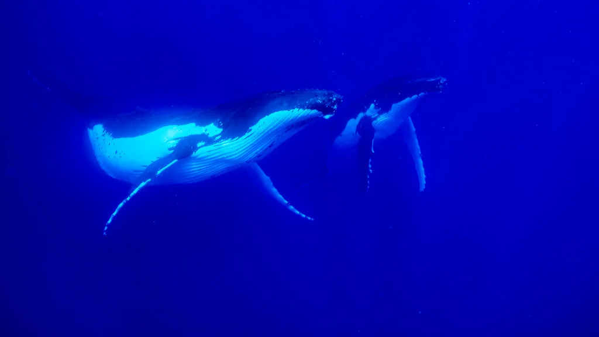

Photo: Unsplash
Last reviewed: February 2026
My Logbook: Tonga — Where the King Still Reigns
I stepped off the gangway at Vuna Wharf and felt the warm Pacific breeze push against my face like a greeting. The air was thick with the scent of frangipani and salt — a humid sweetness I had not expected to hit me so immediately. My wife squeezed my hand and whispered, "We're really here." We were standing in the capital of the world's last Polynesian kingdom, a country never colonized, never conquered, still ruled by a living, breathing monarch whose palace I could see from the dock. The harbor water was the color of jade under morning light. Somewhere a rooster crowed. I watched a Tongan woman in a woven ta'ovala wrap step carefully down the wharf carrying a basket of papayas on her hip, and I realized that nothing about this place was performing for us. We had arrived in something real.
Nuku'alofa is not a polished cruise destination. The roads near the wharf are potholed and dusty. Stray dogs sleep in the shade of corrugated-iron shop fronts. But there is a dignity here that I found deeply moving — a sense that the people of Tonga have chosen to remain themselves, have resisted the gravitational pull of outside influence not through isolation but through stubborn cultural pride. I watched an old man in a formal black vala wrap walk past a crumbling concrete building, his posture straight as a ship's mast, and I understood that the kingdom's sovereignty is carried not just by the Crown but by every citizen who dresses formally for church, who covers their knees in town, who observes the Sabbath with a totality that would make most Western Christians blush.
We walked along the waterfront to the Royal Palace — a white Victorian gingerbread confection from 1867 that looks like it was transported whole from a New Zealand country estate. You cannot go inside. You stand at the wrought-iron fence and gaze through. However, I found this limitation strangely appropriate. The Palace is not a museum; it is a home. Laundry hung in the compound behind the residence. Guards in full ceremonial dress stood at attention. My daughter asked why we couldn't go in, and I told her that some things are more powerful when you cannot touch them — that the mystery of a place is part of its meaning. She nodded and took a photograph through the fence bars.
The Royal Tombs sit in a park across the road — generations of Tongan monarchs resting beneath mounded earth and carved stone. The grounds were cool and quiet, with enormous Norfolk pines casting long shadows over the graves. I stood there for a long time. The silence was thick and reverent, interrupted only by birdsong and the distant sound of waves on the reef. I thought about what it means for a small island nation to have kept its sovereignty unbroken for centuries, through wars and colonial tides and global upheaval. There was something in that continuity that moved me more than I expected.
Our taxi driver, a genial man named Sione who charged us $35 for a half-day island tour, took us south along Tongatapu's coast to the Mapu'a'a Vaea Blowholes — "The Chief's Whistles." I had seen photographs, but nothing prepared me for the reality. Hundreds of holes in the ancient coral shelf, each one a natural cannon through which the Pacific Ocean forces itself with terrifying violence. The sound was like a freight train exhaling. Columns of seawater shot thirty meters into the sky, caught the sunlight, and broke into rainbows. The spray soaked us in seconds. I tasted the salt on my lips and felt the ground vibrate beneath my feet with each eruption. My wife laughed and screamed at the same time. For a moment, I finally understood why ancient Tongans believed the gods lived in stone and sea. The power was not metaphorical. It was geology performing prayer.
We drove east to the Ha'amonga 'a Maui Trilithon — Polynesia's answer to Stonehenge, though Tongans would say Stonehenge is Europe's answer to theirs. Two massive coral-limestone pillars supporting a crossbeam, each stone weighing thirty to forty tons, erected in 1200 AD by the Tu'itatui dynasty. I placed my hand against the warm stone surface. It was rough and pitted, coral fossils visible in the grain. Eight hundred years of wind and rain and tropical sun, and still it stands. Yet despite its scale, there were no crowds, no ticket booth, no gift shop — just an open field, birdsong, and a monument to a civilization that moved forty-ton stones by hand when my ancestors were still living in thatched huts.
Sione drove us back through villages where children waved from the roadside and women sat weaving pandanus mats on their porches. We stopped at a roadside stall for fresh coconut — cold, sweet, and so clean it tasted like the earth had been washed. The woman selling them refused to let me pay more than the asking price of 3 TOP ($1.25). "Fair price," she said, smiling, and pushed my extra coins back across the table. I have traveled to dozens of ports, and I cannot recall another moment where a vendor actively resisted my attempt to overpay. Although Tonga is not wealthy by any economic measure, there is a richness here that defies the balance sheet.
Standing at the blowholes, soaked in Pacific spray, watching my daughter's face illuminate with wonder as the ocean roared through ancient stone, something shifted inside me. I had come to Tonga expecting a quiet, modest stopover — a footnote between the bigger ports on our itinerary. Instead I found a kingdom that had kept its soul intact, a people who still dressed in their finest for church, who still bowed before their king, who still measured wealth not in what they owned but in who they loved. My eyes welled with tears I could not fully explain. The spray hid them well enough. I whispered a quiet prayer of gratitude that we had come here, that we had been granted this glimpse of something the modern world has mostly forgotten — that sovereignty begins in the heart.We returned to the ship as the sun dropped low over the harbor, painting the water copper and gold. Tongatapu's flat silhouette stretched across the horizon like a hand laid gently on the sea. I could hear hymns drifting across the water from a church somewhere in town — voices rising and falling in harmonies that seemed to come from the earth itself. Even so, I knew that I was only scratching the surface. Tonga's 170 islands hold worlds I had not seen: the whale-swimming waters of Vava'u, the raised coral atolls of Ha'apai, the volcanic cone of Tofua where the Bounty mutineers abandoned Captain Bligh. One port day is a taste, not a meal. Still, the taste was extraordinary.
Looking back, I realized that Tonga taught me something I had been circling for years without quite grasping: that a place does not need to be polished to be profound. The cracked sidewalks of Nuku'alofa held more dignity than some of the most expensive waterfront developments I have visited. The blowholes were more spectacular than any engineered attraction. And the quiet grace of Tongan hospitality — the gentle insistence on fair price, the warm smiles, the unhurried pace — reminded me that what matters most in travel is not what we see but how we are received. We had come as visitors. We left feeling like guests who had been gently welcomed into someone's home. I learned that sometimes the smallest kingdom holds the largest lessons, and that sovereignty — real sovereignty — is not about borders or armies but about a people's decision to remain, stubbornly and beautifully, themselves.
The Cruise Port
What you need to know before you dock.
- Terminal: Vuna Wharf — right on the edge of downtown Nuku'alofa; walk directly into town. The wharf area is flat and wheelchair accessible near the pier.
- Distance to City Center: Downtown immediately adjacent — 2-5 minute walk from ship
- Tender: No — ships dock at the pier directly
- Currency: Tongan Pa'anga (TOP); US Dollar sometimes accepted; ATMs available but bring cash as backup
- Language: Tongan, English (English widely spoken in tourism and business)
- Driving: Left side (British style); car rental available for about $50-70/day; roads decent on main island
- Best Season: May-October (dry season); November-April wet/cyclone season but still warm
- Dress Code: Conservative culture — cover shoulders and knees in town; swimwear only at beaches
- Internet: Limited connectivity — enjoy the digital detox or rely on ship wifi
- Mobility note: The wharf area and downtown are relatively flat. Passengers with walking difficulty should plan transport for outlying sites like the blowholes (30-minute drive on bumpy roads).
Getting Around
Tongatapu is a flat coral island, and most of the major attractions are spread across its 30-kilometer length. Downtown Nuku'alofa is walkable from the wharf, but you will need transport for the blowholes on the south coast and the trilithon on the east coast. Here is what works best for cruise passengers exploring independently.
Walking: Downtown Nuku'alofa is immediately accessible from Vuna Wharf — the Royal Palace, the central produce area, and local shops are all within a 5-15 minute walk. Sidewalks are uneven in places but generally flat. Budget nothing for this; it is the best way to experience the capital at your own pace.
Taxis: Available at port; negotiate the fare before departure. Expect approximately 30-40 TOP ($12-16) for a blowholes and trilithon day tour. There are no meters — agree on the price and itinerary upfront. Many drivers speak good English and double as informal guides. A full-day independent taxi tour of the island costs around $60-80.
Tour Operators: Local guides offer island tours covering the south coast blowholes and east coast trilithon for approximately 60-80 TOP ($25-35) per person. You can book ahead through your ship excursion desk or negotiate directly at the port with local operators. Independent tours offer more flexibility but without guaranteed return timing.
Car Rental: Available for about $50-70/day from agencies near downtown. Roads are decent on Tongatapu, though watch for potholes and roaming animals. Traffic drives on the left (British style). An international license is required. This is a good option for independent exploration at your own pace, though fuel costs about $3 per liter.
Ferry to Islands: Pangaimotu and other nearby islands are accessible by small ferry from Faua Jetty near the port. Round-trip ferry fare costs about 20-30 TOP ($8-12). Schedules are flexible — always confirm return departure time before boarding.
Tonga (Nuku'alofa) Area Map
Interactive map showing cruise terminal at Vuna Wharf, Royal Palace, central produce area, Mapu'a'a Vaea Blowholes, and Ha'amonga 'a Maui Trilithon. Click any marker for details and directions.
Excursions & Activities
How I would spend my time. For guaranteed return to the ship, consider a ship excursion for distant attractions like the blowholes. For closer sites, independent exploration works well.
Mapu'a'a Vaea Blowholes — "The Chief's Whistles"
Ocean forced through ancient coral rock creates spectacular water geysers shooting 30 meters into the air. Located on Tongatapu's southern coast, 30 minutes from port by car. Pressure pockets in the reef make the blowholes whistle and roar. Best at high tide with southerly swells. Free admission — no cost beyond transport. Bring camera and prepare to be soaked by spray. A half-day ship excursion typically costs $65-85 per person and includes other south coast sights. If you prefer independent exploration, a taxi round trip costs about $30-40. Book ahead during peak season to secure transport.
Royal Palace & Royal Tombs
The 1867 white colonial wooden palace where Tonga's royal family still resides — viewable from the waterfront but not open to the public. Ornate Victorian architecture set in tropical gardens. Adjacent Royal Tombs in parkland hold generations of Tongan monarchs. On Sundays, the King and Queen worship at nearby Centenary Church. Walking distance from port — no transport cost needed. Allow 30-60 minutes for respectful viewing. Dress modestly. This is an ideal independent stop since it requires no transport.
Ha'amonga 'a Maui Trilithon — "Stonehenge of the Pacific"
Massive 13th-century stone gateway — two coral-limestone pillars supporting a crossbeam, each stone weighing 30-40 tons. Built by Tu'itatui in 1200 AD, its purpose is still debated (astronomical calendar? royal gateway?). A 40-minute drive from Nuku'alofa. Stands in an open field, quietly monumental. Free access — no entry fee. Combine with Captain Cook's Landing Site nearby. Allow 2-3 hours round trip. A ship excursion combining the trilithon and blowholes costs about $85-110 and provides guaranteed return to the ship before departure.
Pangaimotu Island
Small island just offshore — 15-20 minute ferry from Faua Jetty near port. Beach, palm trees, snorkeling over a shipwreck, casual beachside dining. Relaxed tropical island experience without extensive travel. Ferry costs approximately 20-30 TOP ($8-12) round trip. Snorkel gear rental available for about $10. Half-day minimum recommended. Bring reef-safe sunscreen and a modest cover-up for the ferry ride. This works perfectly as an independent half-day while allowing easy return to ship.
Whale Swimming (Seasonal — July to October)
Tonga is one of the few places on earth where you can legally swim with humpback whales. The experience operates primarily from Vava'u (not accessible on a typical port day), but some Tongatapu-based operators offer whale-watching boat trips during season for about $150-200 per person. Book ahead — these fill quickly. This is a high-energy activity requiring moderate swimming ability.
Depth Soundings Ashore
These are the honest notes I wish someone had handed me before we stepped off the ship. Tonga is a place of tremendous warmth and beauty, but it rewards preparation and respect.
Dress modestly — Tonga is deeply religious and conservative. Cover shoulders and knees when in town or at cultural sites. This is not optional; it is a matter of genuine respect for Tongan values. Swimwear is fine at beaches but never in town.
Sunday is sacred — nearly everything closes. Churches are packed, shops shuttered, even taxis are scarce. If you are in port on a Sunday, attend a church service (visitors are genuinely welcome — dress formally) or relax on the ship. Do not expect to find open restaurants or shops.
The blowholes are best at high tide with southerly swells — check tide tables and weather forecasts before committing to the trip. On calm seas with low tide, the blowholes are underwhelming and not worth the 30-minute drive. Ask your taxi driver or the port information desk about conditions.
Bring cash in Pa'anga for local vendors, taxis, and small purchases — credit cards are not widely accepted outside hotels and the few larger restaurants. ATMs exist in Nuku'alofa but can be unreliable. Budget at least $30-50 in cash for a comfortable port day.
The Royal Palace is not open to the public, but photograph from the waterfront respectfully. Do not climb gates or disturb the guards. The Royal Tombs are similarly view-from-the-fence only.
Ha'amonga 'a Maui Trilithon looks modest in photos but is profoundly impressive in person — do not skip it if you have time and transport arranged.
Tongans are warm and friendly but formal — greet people, ask permission before photographing individuals, and show respect for the monarchy and the church. A simple "Malo e lelei" (hello) goes a long way.
Photo Gallery


Image Credits
All photographs used on this page are sourced from free-use platforms including Unsplash and Pixabay, or are original work by In the Wake contributors. Individual credits appear in each image caption.
Frequently Asked Questions
Q: Where do cruise ships dock?
A: Vuna Wharf, right on the edge of downtown Nuku'alofa. You can walk directly into the capital city — it is one of the most convenient cruise ports in the South Pacific. No tender required.
Q: What should I wear in Tonga?
A: Dress modestly with shoulders and knees covered in town. Tonga is deeply religious and socially conservative. Swimwear is fine at beaches but cover up in transit and when visiting cultural sites.
Q: Can I visit the Royal Palace?
A: The palace is not open to the public but is beautifully viewable from the waterfront promenade. The Royal Tombs are in an adjacent park — view through the fence. Dress respectfully when visiting both sites.
Q: Are the blowholes worth visiting?
A: Absolutely — Mapu'a'a Vaea Blowholes are spectacular when conditions are right (high tide, southerly swell). Ocean spray shoots 30 meters into the air. The drive from port takes about 30 minutes and costs $12-16 by taxi each way.
Q: What currency should I bring?
A: Tongan Pa'anga (TOP) preferred. US Dollars sometimes accepted but change given in Pa'anga. ATMs available in Nuku'alofa but bring cash for local vendors, taxis, and excursions. Budget $30-50 minimum for a comfortable port day.
Q: Is Sunday a problem for cruise visitors?
A: Nearly everything closes Sunday — shops, restaurants, and most transport. Tongans attend church (you are welcome to join services — dress formally). If in port Sunday, plan accordingly or enjoy ship amenities. This is not negotiable in Tongan culture.
Q: Is Tonga wheelchair accessible?
A: The wharf area and downtown Nuku'alofa are mostly flat and manageable for wheelchair users. However, outlying attractions like the blowholes have uneven coral terrain that is not wheelchair accessible. Passengers with mobility limitations should consider a ship excursion with accessible transport for distant sites.